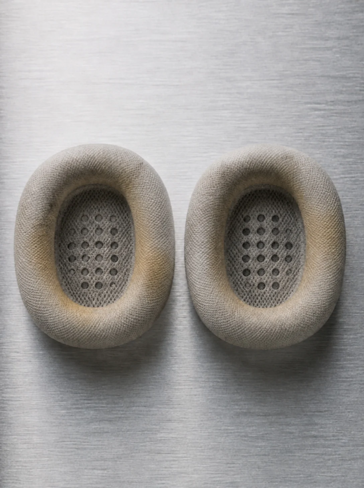
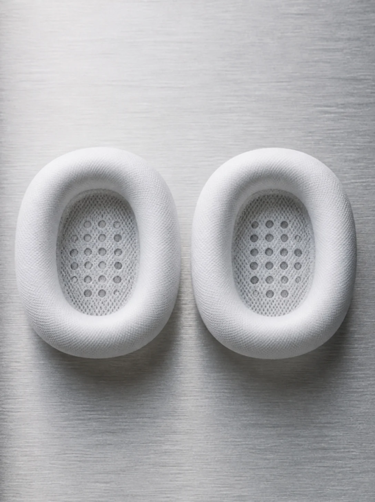
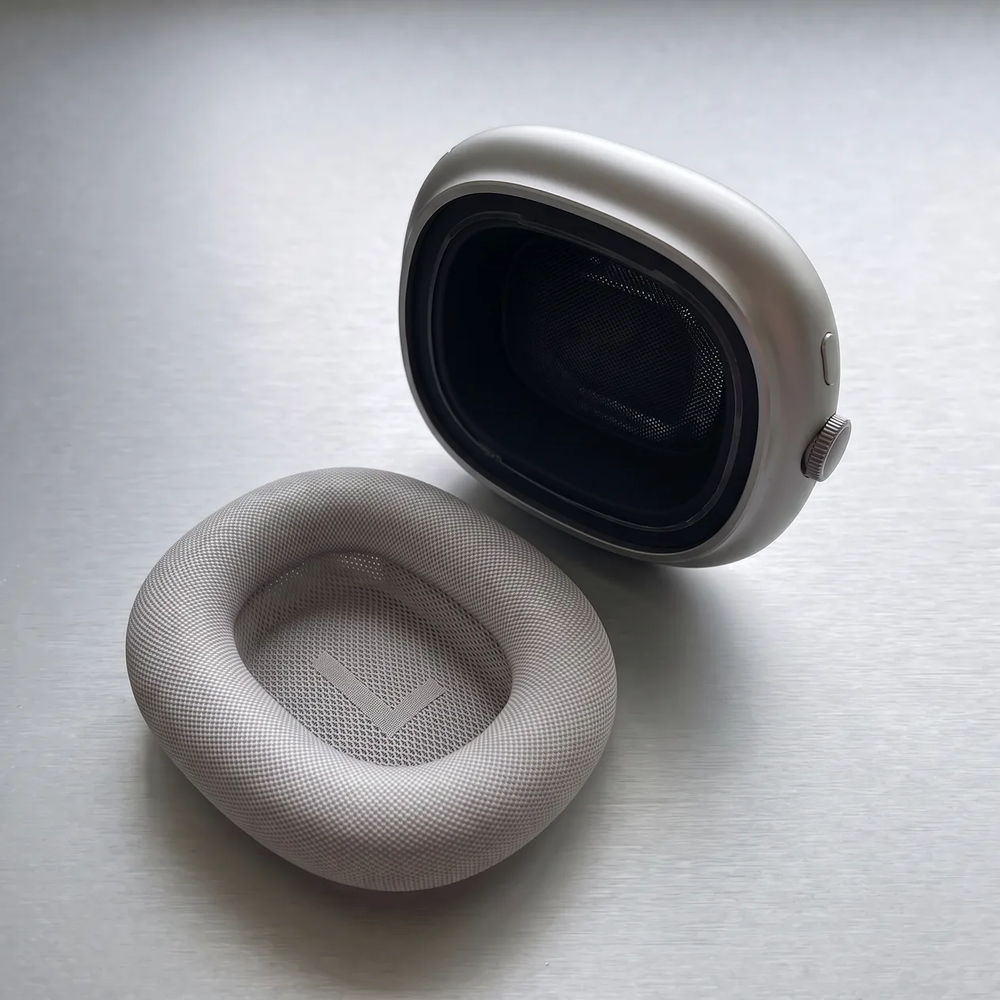
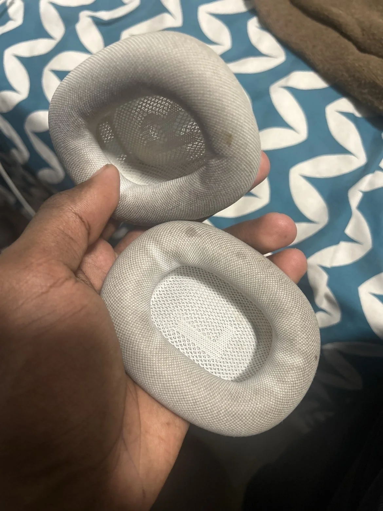
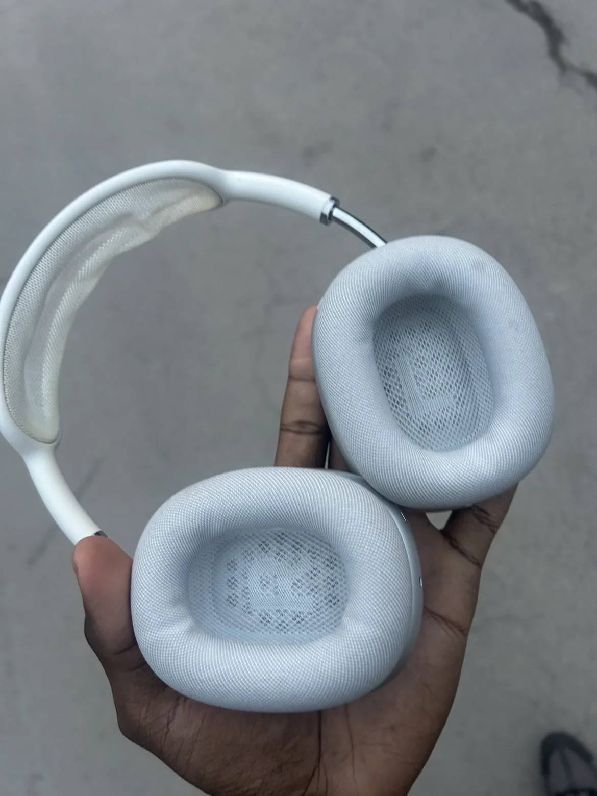

Vos coussinets,
remis à neuf.


29 $ la paire · retour en 48 h · compatible AirPods Max et casques à coussinets en maille.
Les laver chez soi, c'est risquer la mousse et le tissu. Les remplacer, c'est près de 90 $. Nous les remettons à neuf, maille, mousse et odeur, pour 29 $.
La remise à neuf, en trois étapes

La remise à neuf
Dépose
Les coussinets tiennent par aimants. Ils se retirent sans outil et sans laisser de trace sur le casque.
Le même casque, avant et après.
Les mêmes coussinets, tels qu'ils arrivent et tels qu'ils repartent.
À la réception
Avant
Tels qu'ils arrivent.
Deux ans sur les oreilles : la maille a viré au gris, les auréoles se sont installées, la mousse s'est tassée.
- Maille
- grise, tachée
- Odeur
- présente
- Mousse
- tassée
Après
Comme neufs.
Maille blanchie fibre par fibre, mousse désodorisée et remise en forme, remontés sur votre casque.
- Maille
- blanche
- Odeur
- neutre
- Mousse
- remise en forme


Ce qu'il faut savoir
- Tarif par paire
- 29 $taxes en sus · bandeau du casque : +15 $
- Délai
- 48 hà partir de la réception
- Remise du casque
- Dépôt en main propreadresse envoyée par courriel selon votre ville
- Région
- Montréal · Ottawa-Gatineau · Québec-Léviset leurs environs
Réserver une remise à neuf
Dites-nous où vous êtes et quel casque vous avez. Dès réception, nous vous envoyons l'adresse de dépôt la plus proche.
Demande prête.
Votre courriel s'est ouvert avec la demande. Si ce n'est pas le cas, écrivez-nous à bonjour@freshpods.ca.